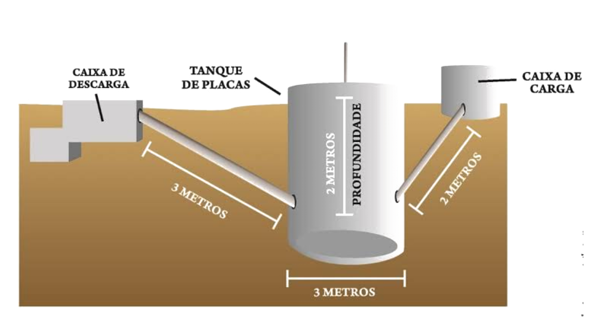

O que é um Biodigestor?
O biodigestor é um equipamento utilizado para acelerar o processo de decomposição da matéria orgânica através da ausência de oxigênio, chamado de biodigestão. Ele permite o reaproveitamento de resíduos orgânicos, produção de fertilizantes e biogás, mas também apresenta algumas desvantagens.
Vantagens do Biodigestor
- Reciclagem e Redução da Poluição: Uso de resíduos orgânicos, reduzindo a poluição ambiental.
- Reciclagem de Excrementos Animais: Destinação correta na agropecuária para reaproveitamento.
- Obtenção de Gás Limpo: O biogás é uma fonte de energia eficiente e econômica.
- Produção de Fertilizantes: Reduz custos agrícolas e tem menor impacto ambiental.
- Melhoria da Saúde Pública: Reduz riscos à saúde com o manejo adequado de resíduos.
Desvantagens do Biodigestor
- Consumo de Água: Necessidade de água para a mistura.
- Controle de Temperatura: Requer uma temperatura constante para o bom funcionamento.
- Subprodutos Nocivos: Possibilidade de geração de H₂S e outros compostos.
- Acúmulo de Resíduos Orgânicos: Pode trazer problemas de saúde pública.
Tipos de Biodigestores
Os biodigestores podem ser classificados de acordo com a periodicidade de carga e a forma estrutural:
- Descontínuo: Carregado completamente e não recarregado até que o biogás pare de ser produzido.
- Semi-contínuo: Carregado em períodos definidos, como os tipos balão e domo fixo.
- Contínuo: Exige uma carga constante de resíduos orgânicos.
Biogás e Biofertilizantes
No processo de biodigestão, são formados dois subprodutos principais:
- Biogás: Gás renovável que pode ser usado para gerar energia elétrica e térmica.
- Biofertilizante: Adubo natural que melhora a qualidade do solo.
Passo a Passo da Produção dos Gases
O processo de produção do biogás ocorre em quatro etapas principais dentro do biodigestor: hidrólise, acidificação, acetanogênese e formação de metano. O biogás resultante é extraído e pode ser armazenado para uso.